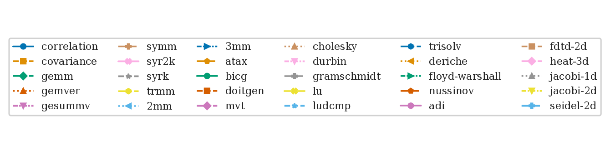
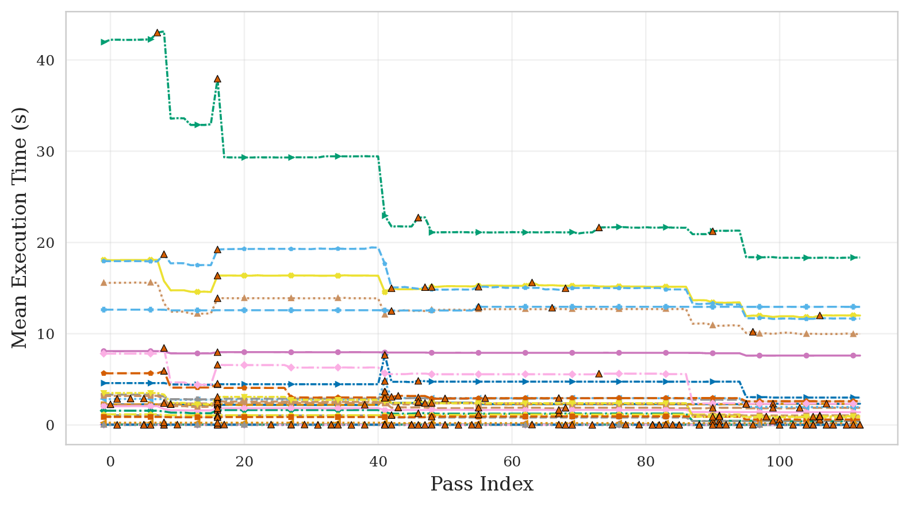
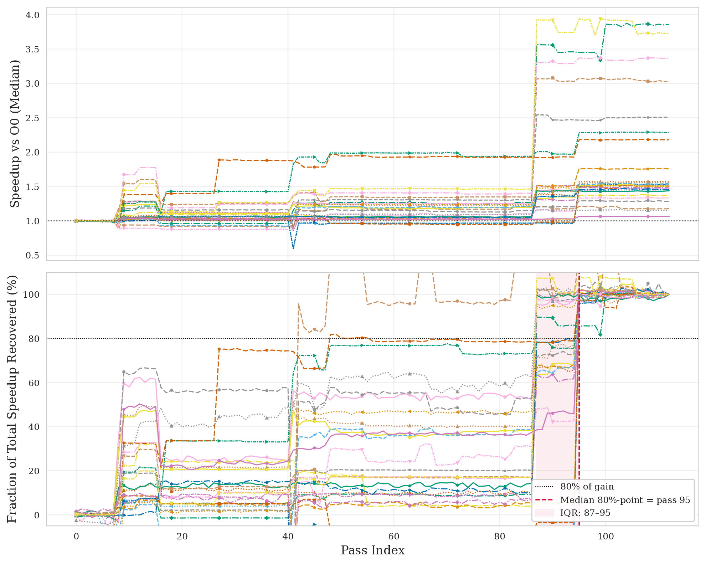
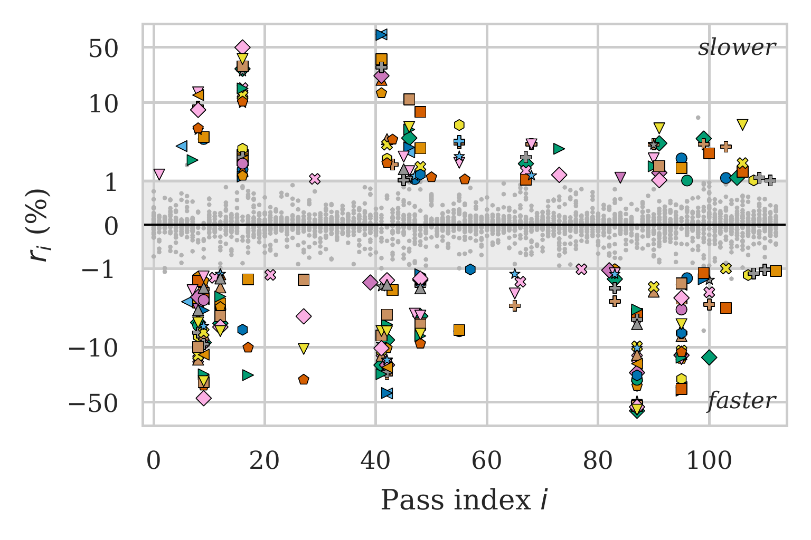
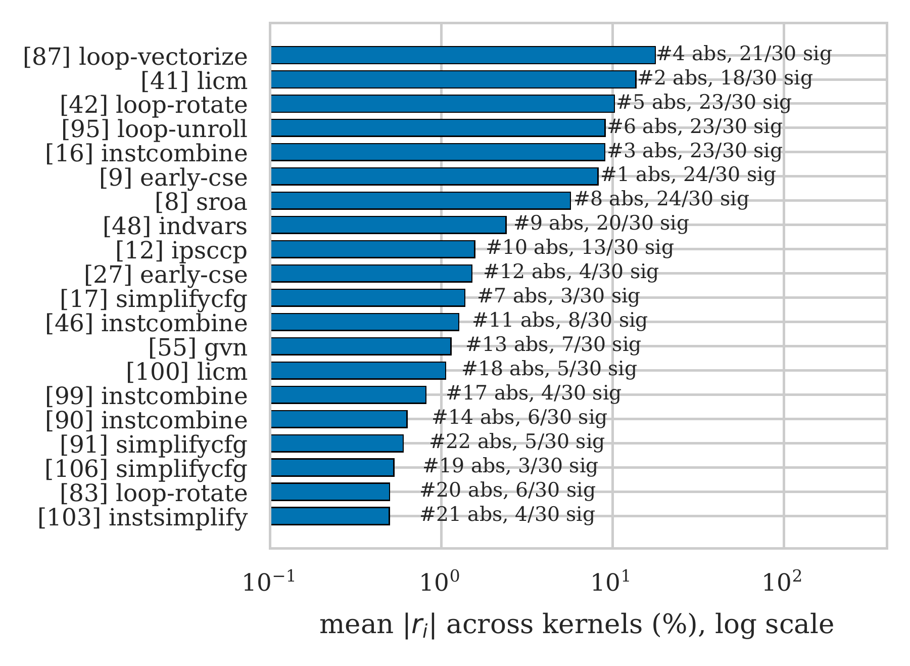
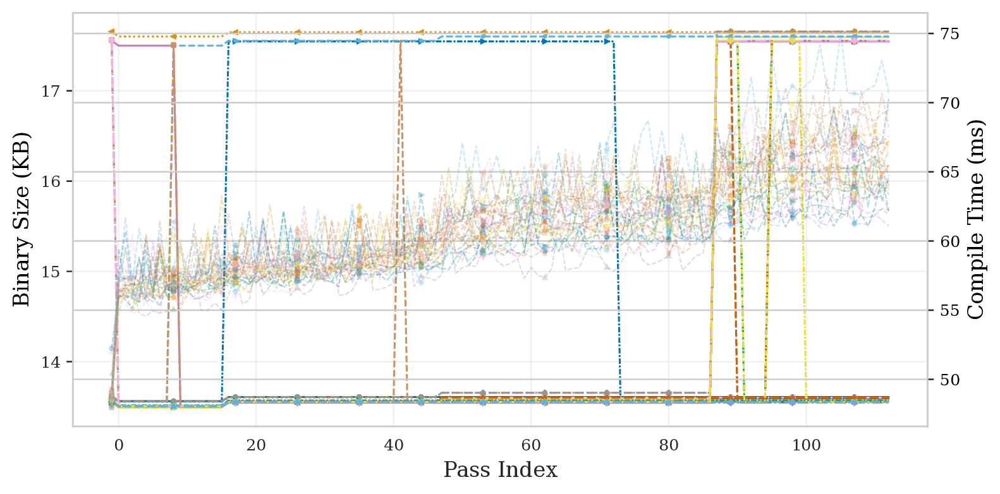
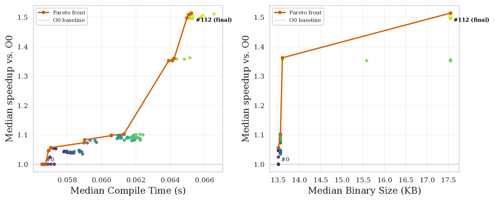
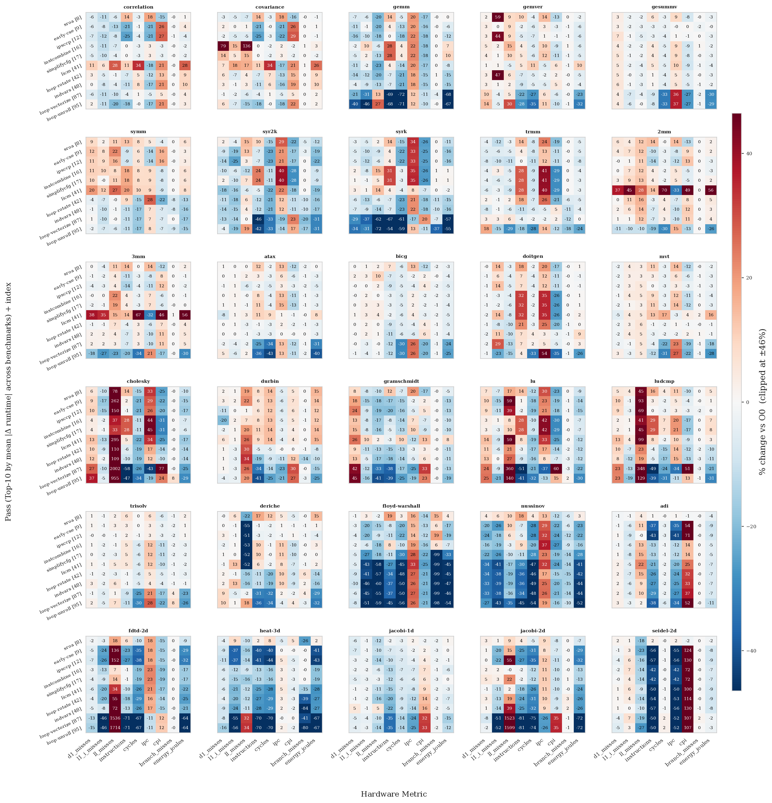
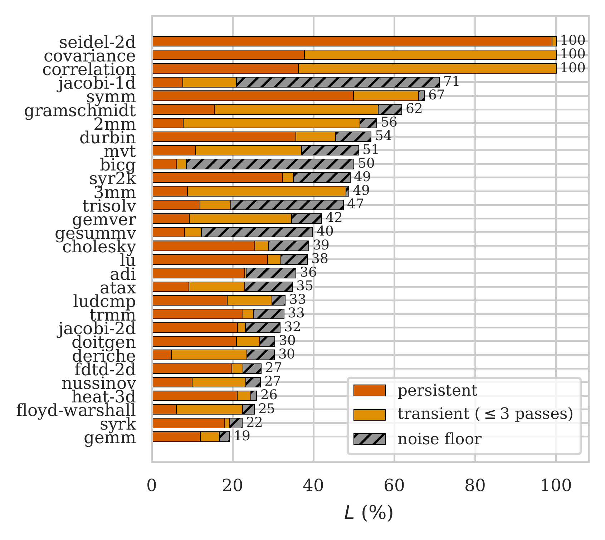

A Multi-Dimensional, Per-Pass Empirical Study of the LLVM Optimization Pipeline
Hi Folks! We just posted a new preprint on arXiv: A Multi-Dimensional, Per-Pass Empirical Study of the LLVM Optimization Pipeline. This post is a quick, friendly tour of what we found.
Update (October 2026): we posted a revised version (v2) of the paper, and this post now follows it. The main change is statistical. Many passes leave the binary byte-identical, so those transitions tell us exactly how large measurement noise is, and we now use them to calibrate every claim. This changed some headline numbers: regressions are counted only when they are significant, the Pareto result is much thinner than v1 suggested, and the loss L is split into noise, transient dips, and persistent loss. We also fixed an example in Finding 4 that mixed absolute and relative units. The scripts that recompute every new number are in reanalysis.
Code and artifact
The tool we built to run all of this is llvm-passview — an open-source driver that automates the prefix-by-prefix compilation and measurement pipeline.
If you want to dig into the raw data, the full artifact lives at PAPER-ARTIFACT. For every benchmark, at every pipeline step, you get: the LLVM IR, the compiled binary, execution logs, and profiling CSVs for every metric (runtime, compile time, binary size, IPC, cache misses, energy, ...). That's a lot of data to play with. The exact 113-step pipeline decomposition is available here.
The question
You pass -O3 to clang and your code gets faster. Great.
But which of the 113 optimization passes that -O3 runs actually did something?
And did they all help, or did some of them secretly make things worse before another pass fixed it?
That's what we set out to answer. We ran every cumulative prefix of the -O3 pipeline — pass 0 only, then passes 0–1, then 0–2, ... up to all 113 — on 30 PolyBench/C kernels and measured execution time, compile time, binary size, hardware counters (IPC, cache misses, ...) and energy. That's 84,750 measurements in total, with careful noise mitigation.
All multi-benchmark figures below use the following legend — one unique color, marker, and line style per kernel:

Finding 1 — marginal impact of individual passes
The first surprise: -O3 is not monotonically improving. Of the 3,390 pass-to-pass transitions, 291 change runtime significantly (more than 1% and a Mann-Whitney test), and 106 of them (36%) are slowdowns. They show up in 28 of 30 kernels, with a median of +2.7% and a maximum of +73%. Three passes cause 68% of them: instcombine, simplifycfg, and licm.
The same criterion fires on only 0.9% of the transitions whose binary does not change at all, so these are not noise. Using p < 0.05 alone would flag 25.7% of those identical binaries!
Here's what the runtime trajectory looks like across all 30 benchmarks:

Most of the speedup also comes late in the pipeline. The median benchmark needs to complete 84.8% of the pipeline before locking in 80% of its final speedup — driven by loop-vectorize (pass 87) and loop-unroll (pass 95). Three benchmarks (correlation, covariance, seidel-2d) end up slower than -O0 altogether.

Decomposing the trajectory into per-pass deltas reveals a clear 80/20 structure. Most transitions are inert: only 32.6% change the IR and 28.2% change the binary, and 58 of the 112 pass positions never change the IR of any kernel.
Measured as relative change per pass, 14 positions (12.4%) account for 80% of the total impact. loop-vectorize, licm, loop-rotate, loop-unroll, instcombine, early-cse, and sroa carry most of the weight.

Aggregating those deltas across all benchmarks gives a cross-benchmark ranking of who actually did the work. Using relative instead of absolute deltas barely changes it (Spearman 0.79, 9 of the top 10 in common), so the ranking is not driven by the long-running kernels:

sroa and early-cse are the most universal (24/30), gvn is program-specific (7/30).Finding 2 — speed, compile time, and binary size trade-offs
Runtime improvements don't come for free. Compile time grows near-monotonically, while binary size is non-monotone: early passes shrink it via dead-code elimination, late inlining and unrolling inflate it. In 29 of 30 benchmarks an earlier prefix is nominally faster than the final -O3 binary at no larger size, but the margin is thin: it is significant in 24, with a median gain of 0.8%, and above 1% in only 10. A prefix that is strictly smaller and faster exists for just four kernels: correlation (+6.5%), covariance (+5.1%), seidel-2d (+3.1%), and symm (+2.5%). Also, static IR instruction count turns out to be a poor proxy for runtime: 27/30 benchmarks show a negative correlation between IR size and execution time, since passes like unrolling and vectorization expand the IR while reducing runtime.

Putting speedup and binary size together on a Pareto plot makes the dominated endpoint obvious:

Finding 3 — vectorization saves energy (not just time)
We also measured hardware counters and RAPL energy. A striking result: IPC (instructions per clock) actually falls by 17.4% end-to-end, even though execution is much faster. That sounds contradictory — but it makes sense once you realize vectorization (SIMD) replaces many cheap scalar instructions with fewer, wider, longer-latency ones. You're doing less work total, which wins, even if each individual operation takes longer per cycle. The heatmap below shows exactly which passes move which counters, across all 30 benchmarks:

On the energy side: passes that improve runtime are de facto energy passes too.
The suite-wide energy savings track runtime savings closely (30–60%), with the biggest single step at loop-vectorize (−35% in one pass).
To our knowledge, this is the first per-pass energy profile of the LLVM pipeline.
Finding 4 — how much speedup is lost to phase interference?
Given all those non-monotone transitions, one natural question is: how much potential speedup is the pipeline leaving on the table? We define a simple idealized upper bound: take the sum of all positive pass contributions, ignoring the regressions. The loss L measures the gap between that ceiling and what you actually get.

The mean loss is 46.35% (median 39.3%). This is an upper bound, since passes don't compose additively, and most of it is not really lost:
- 9.7 points are noise. They disappear when we ignore the transitions whose binary is byte-identical.
- 15.3 points are transient dips that a later pass repairs within three passes. On
correlation,licmat pass 41 lowers the speedup over -O0 by 0.26, and the very next pass (loop-rotate) gives back 0.18 of it: the pipeline self-corrects in situ, but not fully. - Only 21.3 points persist to the end of the pipeline.
The persistent part is largest on seidel-2d, symm, covariance, and correlation, the same four kernels where a strictly smaller and faster prefix exists.
It is also concentrated: the first instcombine (pass 16) causes 29.9% of it, gvn (pass 55) 18.5%, and the first licm (pass 41) 8.8%. These are the same canonicalization passes that deliver most of the speedup.
As far as we know, this is the first search-free, per-pass quantification of this loss in a production compiler's default pipeline.
So what?
A few practical takeaways:
- Pass pruning and autotuning: 58 of 112 positions never touch the IR, and 71.8% of prefixes produce the same binary as the previous one. An autotuner can hash the IR or the binary to skip redundant measurements. Pruning still needs end-to-end checks, since a pass that does nothing in the default order may matter in another.
- Cost models: IR instruction count is a poor proxy for runtime. 27/30 benchmarks show a negative correlation between IR size and execution time — more IR often means faster code (unrolling, vectorization).
- Phase ordering: the persistent loss sits in three positions. A repair search that only touches those positions explores a far smaller space than full reordering.
- Stopping early: truncating
-O3is not a general win. It pays off (2.5–6.5%) only on the four kernels with large persistent loss, so it is a per-program tuning knob, not a default. - Measuring passes: calibrate significance on a null. Here p < 0.05 alone flags a quarter of the transitions whose binary did not change at all.
- Energy: if you're optimizing for power (mobile, HPC), just optimize for runtime — at least for compute-bound workloads, the two objectives align tightly.
The full paper is on arXiv: arxiv.org/abs/2606.31238. If you have thoughts or questions, feel free to reach out!
How to cite
@misc{Bruzzone26f-preprint,
title={A Multi-Dimensional, Per-Pass Empirical Study of the LLVM Optimization Pipeline},
author={Federico Bruzzone and Walter Cazzola},
year={2026},
eprint={2606.31238},
archivePrefix={arXiv},
primaryClass={cs.SE},
url={https://arxiv.org/abs/2606.31238},
}